Everything you need to know about working with me as your book marketer. If your question is not answered here, send me a message and I will get back to you within 24 hours.
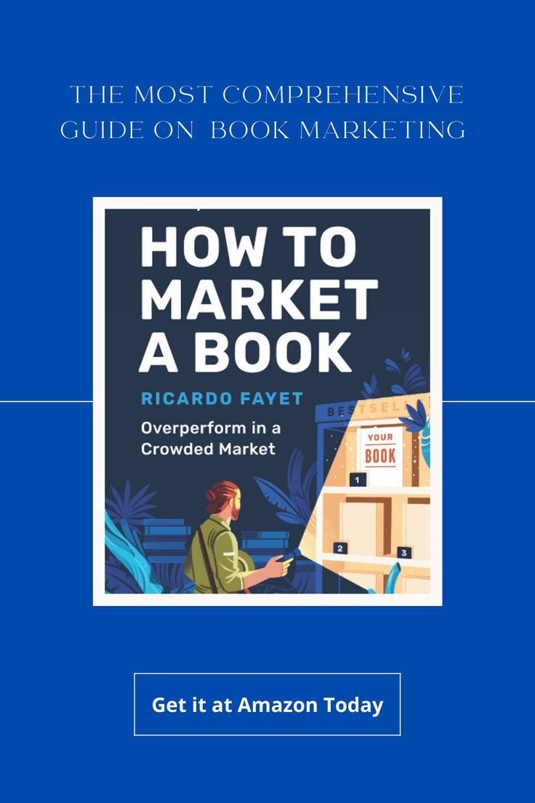
After seven years of working with over 250 authors, I have heard just about every question you can imagine about book marketing. From first-time self-publishers who have no idea where to start, to experienced authors who want to understand exactly how my campaigns differ from the agencies they have worked with in the past, these questions come up in almost every consultation call I have.
I have compiled the most common questions below and answered each one in detail so you can make an informed decision about whether hiring a professional book marketer is the right move for you and your book. I believe in complete transparency, so you will not find any vague answers or marketing fluff here. Just honest, straightforward information from someone who has been doing this for a long time.
If you do not see your specific question answered below, please visit the contact page and send me a message. I respond to every inquiry personally, and I am always happy to chat about your book marketing needs.
These are the most common questions authors ask when they are considering hiring a professional book marketer for the first time.
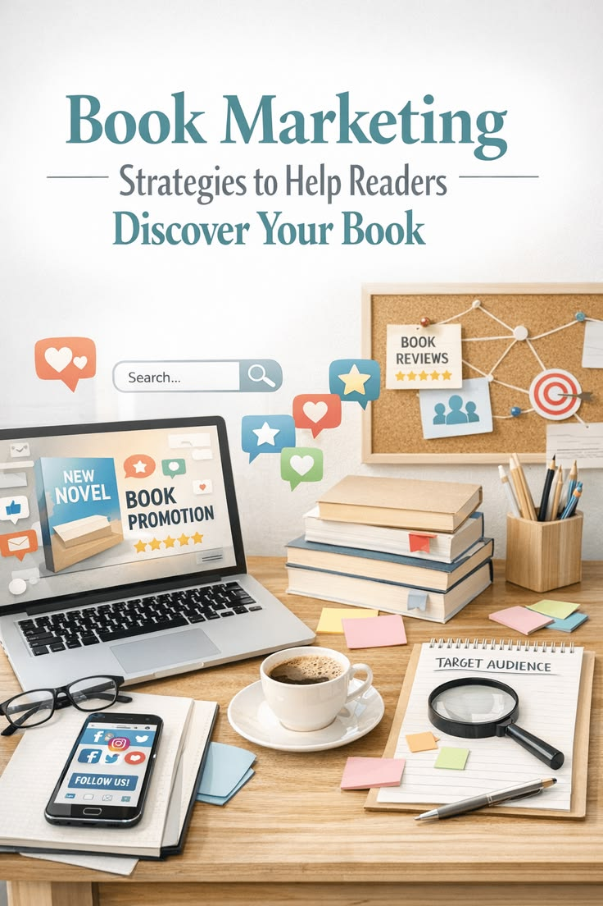
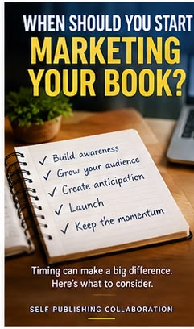
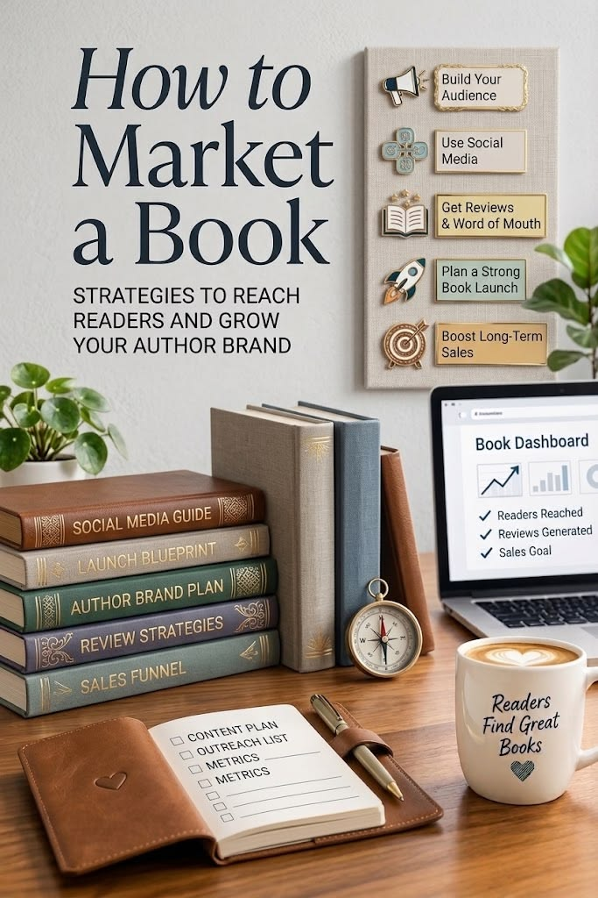
Money is always a sensitive topic, especially for independent authors. Here are honest answers to the most common pricing questions I receive.
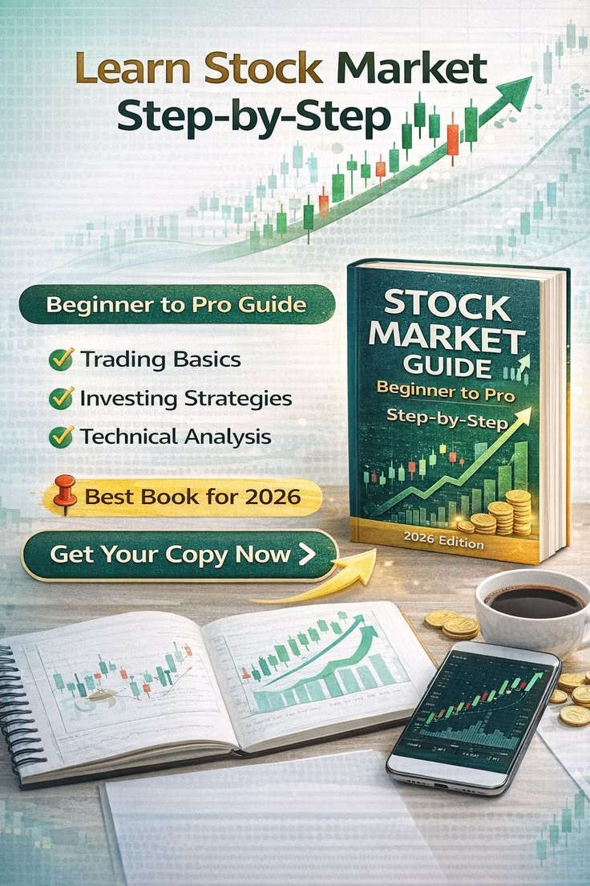
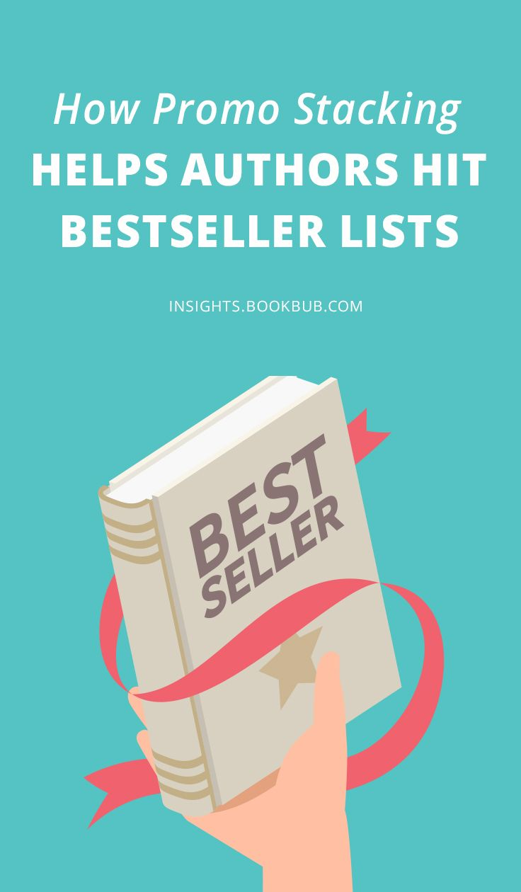
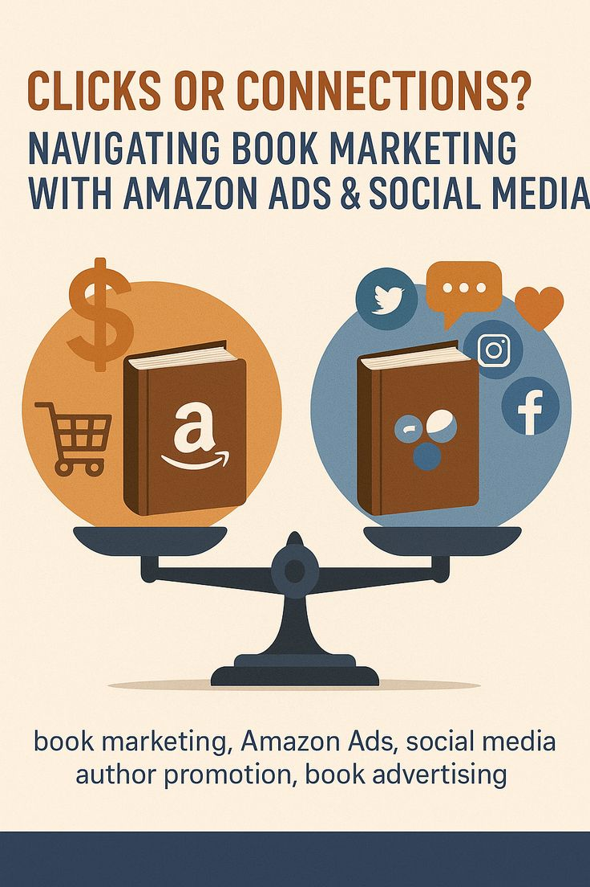
Understanding the process before you invest is smart. Here are detailed answers about what to expect when you hire me as your book marketer.

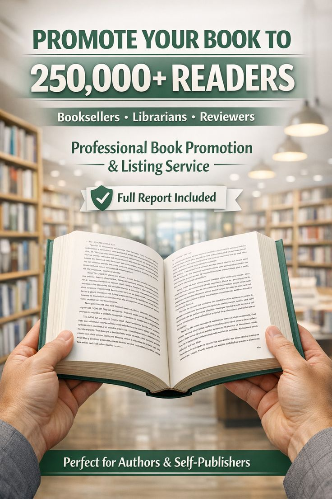
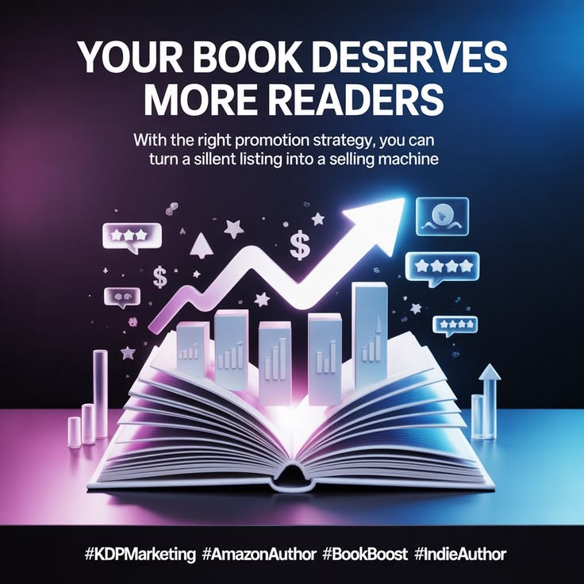
Curious about the specific platforms, tools, and strategies I use to market books? These answers will give you a clear picture of my approach.
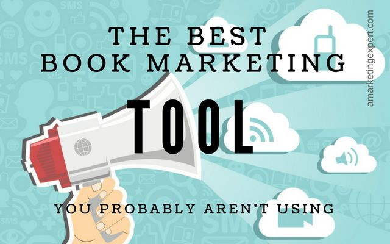
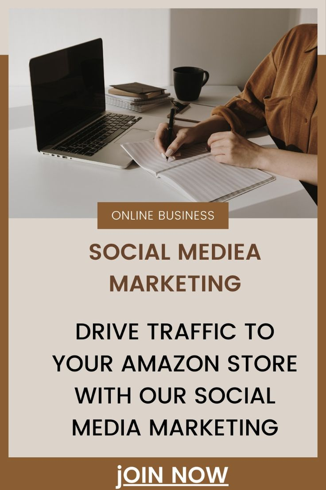
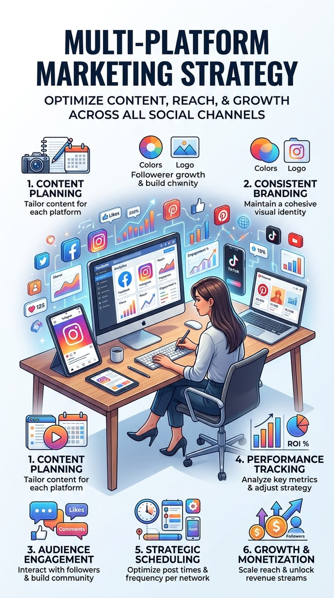
Let us talk honestly about what you can and cannot expect from a professional book marketing campaign.
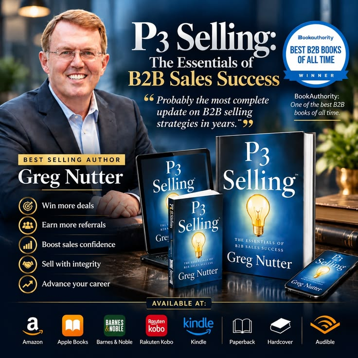
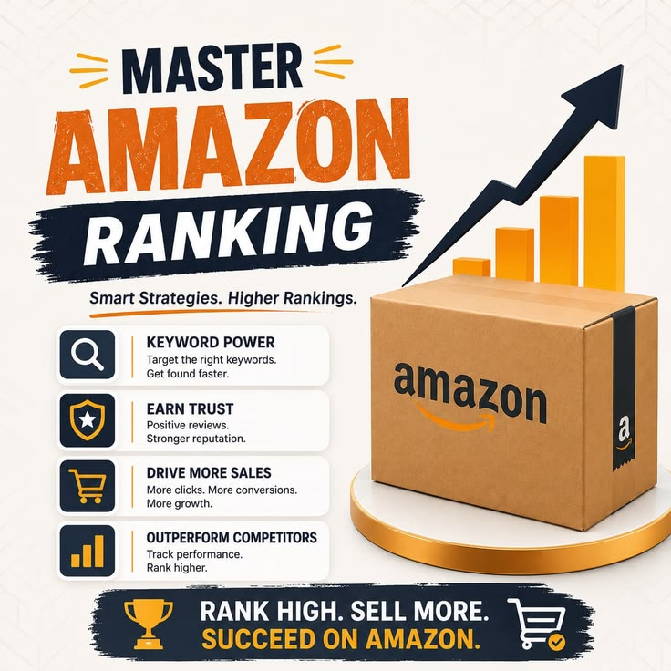
I know that hiring a book marketer is a big decision, and you probably have questions that are specific to your unique situation that I could not possibly cover in a general FAQ page. That is completely normal, and I welcome the conversation.
The best way to get your questions answered is to book a free consultation with me. During that call, I will listen to your concerns, analyze your specific situation, and give you honest, personalized answers that actually address your unique challenges as an author.
I am based in Florida, United States, but I work with authors worldwide, so do not let geography stop you from reaching out. I respond to every message personally, usually within a few hours.
You have read the questions, you have read the answers, and you know that professional book marketing can make a real difference for your book. The only question left is whether you are ready to take the next step. Your free consultation is waiting.